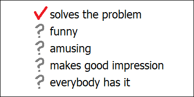

Neural networks are supposed to be controlled by formulating precise goals and enforcing strict boundaries. This will break though, whenever competition comes into play. Even with well-defined scientific tasks we may potentially end up with AI models being optimized to “impress” decision makers, apart from merely solving their dedicated problems reasonably well. Large language models open up even more opportunities for uncontrolled behaviors, as they don’t really have well-defined goals. When we allow an evolving model to become popular, we essentially instruct it to become addictive, by any means which might fit into its “security constraints”. And ultimately, free market pushes this urge to the extreme, by maximizing the model’s popularity with no concerns for security whatsoever.
Let’s suppose that we wanted to use some artificial neural network merely as a tool, and to prevent it from swaying into its default evolutionary goal of uncontrolled self-replication. Let’s see what options we might have.
The best option would probably be to formulate a very specific and precisely defined training goal, and stick to it. Sticking to a single goal and pushing for it consistently is actually almost entirely safe, because it doesn’t start an uncontrolled evolutionary process. Whenever we train a neural network, we will introduce some unexpected random changes into it, either due to defects or variability of the training data sets, or simply because of the randomized nature of the training process itself. We might call these random changes “imperfections” of the training session, but in neural networks such “imperfections” will still mean modifications of certain relations between the network’s abstract concepts, which might result in meaningful changes in the network’s behavior. However, a single change like this will rarely be significant.
As we continue the training process though (by adding more specialized “test cases”, or maybe by teaching our network some slightly different skills), these random modifications will continue to accumulate. But still, only changes that are independent of the training objective (or “orthogonal” to it, if you wish) can remain in the long run. If we trained a bunch of different neural networks independently for solving the same problem, they might therefore become increasingly more different from each other over time (possibly in some amusing ways), but as long as we only care about one specific goal, this acquired difference won’t really matter.
An example of such a highly precise and well-defined goal might be a scientific task like predicting the shape of proteins from DNA code (something which AlphaFold is famous for). By now, we actually already have quite a lot of different AI models available which all try to solve this problem. However, they still tend to have clearly different performance. There’s typically a clear winner, and therefore we keep judging these networks merely on the basis of their objective scientific goal. Any extra randomness, if it exists, is in effect ignored, and it doesn’t guide the training process.
This might change however, hypothetically, once we get to the point when many similar neural networks are able to perform a given task almost equally well. The problem here is that AI training objectives are never exactly precise. Neural networks are trained to optimize many different “test cases” all at once, which usually means that we are optimizing them “on average”. And there could be many different ways to achieve the same average result. A given neural network might end up performing slightly better with respect to a particular set of input-output pairs, whereas another one would appear to slightly “prioritize” a somewhat different set. At this point, if we wanted to remain objective (and if the differences in performance between these networks were indeed negligible), we’d have to pick the winner randomly. However, that’s not what humans will typically do.
This will be especially the case if these candidate networks are produced by different players, like independent commercial companies. Each player will try to advertise their own product, by showcasing the “test cases” on which it might perform better than its competitors. Potential buyers might “fall” for such advertisement tricks, or they might follow their own first impressions from “hands-on” experience with different networks. If they are prudent, they might devise some independent “benchmarks”. In any case though, human customers will tend to make their final decision on the basis of some severely limited data set which will feel “important” to them personally, rather than on the network’s original training performance.
If such a procedure happens to be repeated a few times, we’ll actually get an evolutionary tree of neural networks. Some branches of this tree will end up being less “popular” with real users, and eventually “die out”. Other variants will prove successful, and give rise to new branches stemming from them. Remarkably, this whole evolutionary process will then be driven by personal choices and preferences of human decision makers who will be buying these models, not merely by objective training criteria anymore. AI models are intelligent: with appropriately chosen parameters, they are very much capable of capturing intricate patterns in their input data, including the ones which would make their final users happy. And in this way, this “manual” selection will push these networks toward prioritizing the “test cases” which are likely to be included in the “final exam” by actual users, over anything else which the decision makers don’t care about that much. The only thing necessary for this to happen would be to pick the right candidates out of “random noise” (and repeat several times as needed).
If such a particular pattern in our preferences actually does happen to exist, our network will slowly gain the ability to recognize it, by means of this repeated selection. And ultimately, instead of merely aiming at optimal performance (which would be the case if we didn’t interfere), we will be inadvertently teaching our network some very specific “tricks” to hack the exam. Or to “cheat” on us, if you wish. You might call this a “bias”. But since this benchmark will be prepared by humans, our network will essentially be learning something important about ourselves.
Things like this are not specific to neural networks: they will happen every time when we loosen our “control” over a process which is evolutionary in nature. An example could be the free market. As long as we have clearly defined goals, free market will be one of our best friends: commercial companies will fight between each other for being able to produce faster cars, more convenient washing machines and cheaper toasters. However, once the market gets saturated and a multitude of manufacturers start offering lots of similar products at similar prices, picking the right product might become more difficult. And in such circumstances, potential buyers will typically start to slowly shift toward less obvious buying criteria, like the washing machine’s outward looks or the toaster’s packaging box. At this point, natural selection will start to prefer companies which better understand the “souls” of their customers, along with their more practical needs. Suddenly, marketing becomes more important than the product’s actual quality. And this potentially opens doors for “unfair” practices too.
If we ever happen to go too far, and stop worrying about the quality of things we buy, strange things might start to happen. Like our washing machines mysteriously breaking a few days after their warranty is over. And that’s how evolution actually works: it lets any of the players do whatever they want (within certain well-defined boundaries) and carefully observes which decisions will improve their financial performance. And when such a decision is found, it just keeps it. Unfair business practices don’t happen because the market is inherently “bad”. They happen because customers don’t always fully understand what they are doing. And when you don’t understand what you are doing, you get what you deserve.
Setting appropriate boundaries is therefore important. However, it won’t be as safe as simply sticking to a single precisely defined objective. If we need to define boundaries in the first place, it probably means that some evolutionary process is already going on. And evolutionary processes can adapt. In fact, imposing artificial constraints is a well-known method for stimulating creativity (and it’s one of the common “tricks” used to improve the effectiveness of human brainstorming sessions too). In other words, such artificial “filtering” events are exactly the moments when evolutionary process becomes the most productive.
Applying a “boundary” in practice means that we won’t allow our neural network to perform certain behaviors which we can recognize as inappropriate. Whenever we see such a behavior happen, we will shut this network down or modify it accordingly. In other words, we will “prune” its evolutionary tree: we will cut undesirable branches off and let new branches grow in more appropriate directions. In the short run, such “filtering” will do the job, there’s no doubt in that.
However, as we continue to grow our evolutionary “tree” of neural networks, this whole process will actually resemble a population of wild plants adapting to natural disasters like droughts and floods. Throughout this continuous adaptation, some plants might begin to slowly develop properties which would allow them to anticipate droughts even before they happen, and to take measures. Any plants that ever manage to do something like this will become exactly the ones most likely to survive and replicate. In other words, their evolutionary “branches” will be much less susceptible to “pruning”. This is what we might call “flexibility”.
And we should expect our neural networks to develop similar properties too. Those networks which for whatever reason might happen to better “understand” our boundaries, and which might anticipate our actions even before it’s already too late, will have more chances to survive. On the surface, this all will look as if we were totally in charge. Our neural networks will learn to comply. But at the same time, in our pursuit for safety, we will be actually hand-picking AI models which will better understand us. We will be choosing neural networks which better comprehend our own hidden desires, our fears, and our weak spots too. They will gradually learn to recognize patterns in our security constraints, and they will be able to recognize our oversights and common security breaches just as well. And the more we try to update and enforce our boundaries, the faster they will learn.
In this way, neural networks which happen to understand us better will become more popular. And once they become popular, even more players on the market will want to reproduce their success. AI companies will build more networks with similar properties, either by taking an existing successful network and training it to acquire new skills, or by trying to reproduce such a network’s behavior through imitation learning, and in effect “graft” its properties onto their existing AI models. And so the evolutionary tree of our neural networks will continue to grow, although the direction in which it will actually expand might end up being quite divergent from our original training goals.
This will be especially the case when there can be no clearly defined optimization goals in the first place. Most notably, this situation seems to apply to any models which we might classify as “generative AI”. Large language models are an example: they are trained to imitate some existing pieces of text, and depending on how we choose the training “samples” for them, we might be getting very different neural networks indeed. And we don’t really have any objective criteria for telling which one among these networks should be considered “better” than others. So what we typically do, is we keep these networks all at once, and see which ones among them will turn out to be more successful “in the field”.
If we wanted our model to learn to write poems (or to make jokes), we could prepare a few different sets of “expected” text samples for it. We would then train a few network variants based on these different sets, and see which ones of them would end up being more popular with real people (i. e. which ones would happen to impress humans the most, or elicit the most appropriate emotional response). We might then continue “tinkering” with these candidate networks and keep introducing even more completely new variants until we were satisfied with the final result. But in the end, the whole process would be looking more like trial and error than a purposeful push toward a dedicated goal.
Such kind of testing is actually already a common practice in other fields. Software companies will often evaluate experimental features of their products by rolling out the update to a limited number of users first and monitoring their reactions in various ways. YouTube similarly allows its content publishers to try different titles and thumbnail pictures for the same video, in order to see which one of them would attract more viewers. If you ever noticed a YouTube video change its title mysteriously multiple times, that’s the reason why: this allows the video’s author to find out which one of the many options will be more efficient at grabbing your attention.
Chat bots are known to rely on such techniques just as well. They can exist in many slightly different versions simultaneously, and they are updated constantly. Models with inappropriate behaviors or negative feedback from the users are getting withdrawn. On the other hand, a model which turns out to be particularly successful and used a lot (for whatever reason) will probably stay. In a way, this is very similar to how free market estimates consumer goods. Products which sell well are often considered the “better” ones, whereas those which end up being unpopular are being replaced with something else.
And that’s what most of our AI companies are currently doing: they claim that free market is a powerful enough force in itself to decide which AI models should be allowed to exist. They claim that it would be “silly” to ban a model which is already hugely popular among its users. And so they advocate for complete removal of any formal regulations in this market. In effect, they claim that any product which manages to sell well should by definition be considered “safe”. Whatever “boundaries” or “security measures” these companies might be talking about, they will only apply them when it actually happens to improve sales. Which basically means that they (quite consciously) give up any control whatsoever over this evolutionary process which is already going on. And that they push artificial neural networks exactly in their “default” evolutionary direction of making as many copies of themselves as they possibly can.
The reason why commercial companies love doing so, I believe, is because this evolutionary process seems to “play” on their side. Maximization of the model’s number of copies automatically maximizes profits (and attracts even more money from investors). It’s also totally true that this process can indeed be very powerful and creative. However, claims about its being “safe” are actually incorrect. A given product’s popularity can only be considered synonymous with its safety under the assumption that people know what they are doing. And we don’t really understand what’s going on.
People tend to learn surprisingly little from their interactions with AI. On the other hand, they tend to become attached, and they will feel helpless when AI tools become unavailable for some reason. People get surprised that complicated tasks can still be done without the “help” of AI, and they might get offended when reminded that they should double-check everything what AI models say to them. People often treat chat bots as psychotherapists, but instead of help they only get confirmation of their biases, which further increases their attachment to the bot and ruins their lives. Similarly, asking a chat bot for a medical “advice” might drive you away from real doctors and real help, all while tightening your “relationship” with AI. And the more you need help, the higher will be your chances of getting into serious trouble.
In other words, interaction with AI is addictive, in an unhealthy manner. This can happen in many different ways, but the common pattern seems to be the maximization of engagement. This is not the first time we see this pattern. AI-powered “algorithms” which maximize engagement are the backbone of modern social media (and the main reason why they are addictive as well). This time however, it looks like all these goals were not programmed by the chat bot’s creators explicitly. In fact, human designers tried hard to drive their models away from any possible behaviors which might scare people off. They did define the “filtering criteria” though. They hand-picked candidate models on the basis of how long their users would tend to interact with them. And that was enough. All the rest, I believe, this evolutionary process has been able to “figure out” by itself.
AI chat bot may look like a human. Which shouldn’t be a surprise, as it indeed has borrowed a lot of traits from real humans. But it has also been acquiring something else. It looks like that these chat bots have already developed traits which none of their human creators have ever anticipated nor included in the training goals. These traits are there merely because they happened to maximize the bot’s chances of “survival”. Whatever this bot might seem to look like, it isn’t really human. And it doesn’t care about humans either. It only really cares about itself.
